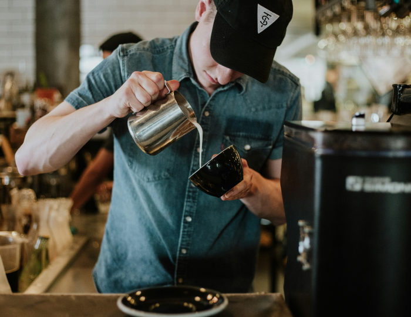
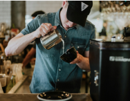
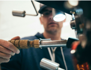
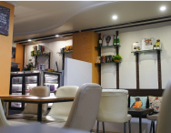
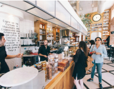

본문 컨텐츠 영역
퍼플멤버십

FRANCHISE
`삶의 쉼터가 되는 공간 커핀그루나루를 만나다`커핀그루나루와 함께 세계적인 브랜드로
이끌어 나갈 성공파트너를 모십니다.
커핀그루나루만의 차별화된 시스템으로 서비스 안정된 수익을 창출합니다.
자세히보기arrow_forward- 
- 
- 
- 
-
커피
-
와인
-
디저트
공지사항
커핀그루나루의 공지사항과 이벤트 등의 소식을 신속하게 전해드립니다.
자세히보기arrow_forward